Bill Clinton, Bertie Ahern and digital signatures
A Public Lecture using MAPLE
Date . WED. 25th. Nov. 1998.
Venue
. ST. PATRICK'S COLLEGE,
DRUMCONDRA, DUBLIN 9.
Lecturer . JOHN COSGRAVE, MATHEMATICS DEPARTMENT,
ST. PATRICK'S COLLEGE, DRUMCONDRA,
DUBLIN 9, IRELAND. [home e-mail: johnbcos@iol.ie
College: John.Cosgrave@spd.ie]
MAPLE . This talk has been prepared using MAPLE .
MAPLE is a remarkable 'Computer Algebra System', which has been in continuous development since December 1980. Initially it was the brain-child of a dedicated group at the University of Waterloo (Canada). It continues to be developed there, but now with the assistance of INRIA (France) and the ETH (Zurich, Switzerland). It is used here in St. Patrick's College by all first, second and third year students in our undergraduate Mathematics programme.
Some Web sites .
The
MAPLE
home page is at: w
ww.maplesoft.ca
MAPLE can be obtained from Adept Scientific at: elaine.bragg@adeptscientific.co.uk
There are a huge number of helpful sites; use any search engine and look up ' Maple . '
Introduction . In recent years hardly a day has passed without some newspaper, magazine or journal making some reference to ' e-commerce ' and the associated concepts of
encryption ( public-key )
decryption ( private-key ) and
secure digital
signatures
in short, the whole paraphernalia of modern ( i.e. post 1977) public-key cryptography.
[For a history of Cryptography see the outstanding (1181 page) reference: The Codebreakers (The Comprehensive History of Secret Communication from Ancient Times to the Internet) by David Kahn , published by SCRIBNER , 1996 (2nd. new edition) ISBN 0-684-83130-9 ]
My lecture in a nutshell
.
"Ahern to seal historic digital accord with Clinton", and "Digital history made in Dublin" - Irish Times, Sept. 1st. and 5th. On Sept. 4th. Bill
Clinton and Bertie Ahern 'digitally signed' a US-Irish government communiqué on e-commerce, using cryptographic software produced by Baltimore Technologies (see
www.baltimore.ie
for a picture of the signing ceremony, and the government communique). [Mr. Ahern - the Irish Prime Minister - is our neighbour here in Drumcondra, and as a boy went to the primary school in the College grounds.]
What is a digital signature?
It is a mathematically driven electronic form of a classical signature, a
revolutionary development
made possible
through the creation of
'public-key' cryptography
.
How does 'public-key' cryptography work? Here is a highly idealised picture which captures the essential idea : imagine I have paints
public1 (available to anyone . 'Anyone' in the sense that I don't care who has access to it) and
private1
(available
only to me
), with these properties:
1. a surface painted with
public1
(disguising the surface), and subsequently with
private1
, restores the original surface,
2. a surface painted with
private1
(disguising the surface), and subsequently with
public1
, restores the original surface,
3. no one can realistically manufacture
private1
from
public1
.
You then communicate with me by
writing your message on a surface, paint over with
public1
, and send the painted surface to me. On receipt, by painting over with
private1
, I recover your message. Can I have confidence the message came from you? I can't!! The message could be from someone impersonating you.
This is the solution
. Suppose you have paints
public2
and
private2
, with properties similar to
public1
and
private1
. Write your message on a surface, and apply two
disguising
coats of paints:
first with your secret private2 ,
then with
my
public
public1
.
On receipt of the doubly-disguised surface I apply two revealing coats of paint:
first with my secret private1 (stripping off the top layer),
then with
your
public
public2
, revealing the original message which I know must have come from you.
This highly fanciful idea has, however, been made a reality :
Classical (pre 1976) cryptography ( kryptos logos = hidden word) was about devising means of disguising messages so that the recipient of the
message was privy to HOW the message was disguised, and thus - by reversing the process - could recover the original message .
The archetypal example was the Caesar code , whereby the message was disguised by 'transposition by 3', a posh way of saying 'move every
letter along three places.' Thus - for example - ' cat ' would become ' fdw ', and the recipient would recover cat from fwd by moving every letter back
three places
.
Later methods were far, far more complex, but nevertheless the fact remained that until about 1977 all cryptographic methods were such that if one knew HOW a message was encrypted then one could easily decrypt it .
The REVOLUTION brought about in 1976 in a paper
'The fundamental idea of public-key cryptography' ( Diffie and Hellman, 1976 ),
[in which one might say they proposed the idea of the paints] and in 1977 in another paper
'The realization of public-key cryptography' ( Rivest, Shamir and Adleman, 1977 )
[in which one might say they showed how to make them ]
was that one could now have methods of disguise which were of
such a nature
that EVEN IF ONE KNEW HOW THE MESSAGE WAS '
ENCRYPTED
' (
i
.
e
. disguised) ONE COULD NOT '
DECRYPT
' (
i.e.
unscramble) IT IN ANY REASONABLE PERIOD OF TIME (MANY THOUSANDS OF YEARS, SAY)
.
The
key
to this development - in a nutshell - was to devise 'trapdoor' methods: methods which were intrinsically difficult to reverse (it is easy to fall through a trapdoor, but difficult to get out of it)
.
Keep your eye open for this
difficulty of reversal
as my talk proceeds.
Structure of the rest of my talk
Section One
. A romp through
public-key cryptography
, using the revolutionary
RSA method
.
Section Two . How the the RSA method is used to provide a ' digital signature .'
Section Three . The ' factorization problem .' [the ' trapdoor .']
Section One .
First we need to make a convention as to an ordering of our alphabetic symbols ('a' followed by 'b', 'b' by 'c', etc. ):
>
`crypt/alphabet` :=
`abcdefghijklmnopqrstuvwxyz`
.`ABCDEFGHIJKLMNOPQRSTUVWXYZ`
.```1234567890-=~!@#$£%^&*()_+`
.` ,./<>?;':"[]{}| `:
Next we need a procedure to
turn a string of text into a number :
>
to_number := proc(st, string)
local ll, nn, ss, ii;
ll := length(st);
if ll = 0 then RETURN(0) fi;
nn := 1; for ii to ll do
ss := SearchText(substring(st, ii .. ii),
`crypt/alphabet`);
nn := 100*nn + ss od; nn - 10^(2*ll)
end:
Some examples ( Note to anyone trying this: the text must be included within backward quotes , namely ``).
> to_number(`This is great!!!`); # Example 1
Observation .
The initial '46' represents the 'T' in 'This,
the following '08' represents the 'h' in 'This',
.
.
the final '676767' corresponds to the '!!!' at the end.
> to_number(`Lmsaus woutfger &8^%ysph ;;; 23$££!+=plas`); # Example 2
Comment . Junk text will still have a numerical representation.
Finally
we need a procedure to
recover a string of text from a number
>
from_number := proc(nn, integer)
local ss, mm, ll, pp, ii, ans; mm := nn;
ll := floor(1/2*trunc(evalf(log10(mm))))+1;
ans := ``; for ii to ll do mm := mm/100;
pp := 100*frac(mm);
ss := substring(`crypt/alphabet`, pp..pp);
ans := cat(ss, ans); mm := trunc(mm)
od; ans end:
>
Some examples .
> from_number(90271404803580011380091480040519160109188020080120802009130580130125800218091407802716161815220504801601202005181419801506802315130514801518801506801305148028212080141520802008012080190512061901130580052403051212051403058001070109148290);
> from_number(11223344553476800987127834557698798765497059236721694654300987766554443336);
> from_number(46080919800919800180071805012080120503202118056767803015802515211880192021040514201980121515118006151823011804802015800715091407802015802008050918801805072112011880120503202118051986);
A message from the students: 40416767 ... 67
Let's see what it is:
> from_number(4041676767676767676767676767676767);
Now for a crash course on RSA public-key cryptography, in which I cut some corners, but make an effort to point out when I am doing so.
One frequently reads that RSA public-key cryptography is about choosing:
two
'big'
primes - '
p
' and '
q
'- and multiplying them together, forming the number '
n
' - one of the two elements of the '
public
-key
' [this is indeed part of the truth, but is not the entire truth. A certain
care
- in the 'real world' - must be exercised in choosing these two primes. It all relates to the fundamentally difficult '
factorization problem
' ... ].
and that one then creates
two further numbers
:
'
e
' - the '
public
encryption power
', and the second element of the '
public-key
'
[
the fine mathematical detail requires
that this
e
, and the number (
p
- 1) times (
q
- 1), are
not both divisible
by some common whole
number,
greater than 1
. That '(
p
- 1) times (
q
- 1)' is known as the '
phi-value
' of the number
n
, and it was introduced into Mathematics by the renowned 18th. century mathematician, Euler.
Thus -
for example
- to take
small illustrative (only) values
:
if
p
was
5
and
q
was
11
, then
e
could
be chosen to be
3
, because
3
and (
5
- 1) times (
11
- 1) (namely 40) are not both divisible by any
common whole number greater than 1, whereas
e
could
not
be chosen to be - say - 6, since 6 and 40 are both divisible by 2. ]
'
d
' - the '
private decryption power
'
[
the fine mathematical detail requires
that the
product
of the numbers
e
and
d
be a multiple of the number (
p
- 1) times (
q
- 1), plus 1.
Thus - for example - and using the above values
p
= 5,
q
= 11, and
e
= 3,
d
could be chosen to be
27 since 3 times 27 (namely 81)
is a multiple of 40, plus 1 (namely 2 times 40, plus 1). ]
Some brief, passing mathematical notes :
Recall that a ' prime ' number is a whole number which is greater than 1, and which is evenly divisible only by 1 and itself .
A few computations :
> with(numtheory):
Warning, new definition for order
> divisors(17); # 17 is a prime number:
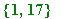
> divisors(15); # 15 isn't a prime number:
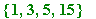
> divisors(123454321);
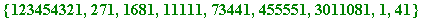
> divisors(2^13 - 1);
> divisors(2^23 + 1);
Here are the first 200 primes :
> seq(ithprime(k), k=1..200);
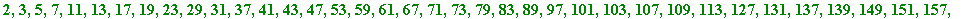
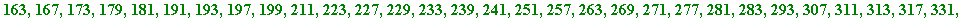
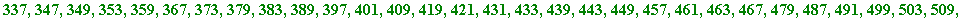

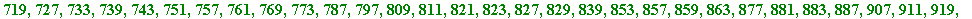
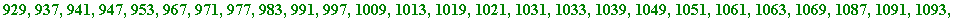
Here is the 1000-th. prime number :
> ithprime(1000);
Here is the next prime after the number 20 :
> nextprime(20);
and here - much more spectacularly - is the next prime after the (randomly-typed) number 9998777553210032992874366465554431:
> nextprime(9998777553210032992874366465554431);
Remark . There is a lot of serious Mathematics going on behind the scenes in making that extremely fast computation ... !!!
Returning to RSA cryptography:
The (
n
,
e
) pair form the '
public-key
' (the public paint, as it were) and
d is the ' private-key ' (the private paint, as it were)
I will create public and private keys for myself (John = j ), and will use:
pj and qj to denote my two chosen primes
nj - my ' public modulus ' - the product of pj and qj
ej to denote my public encryption power
dj to denote my private decryption power
First my two secret primes (to keep matters simple I am not exercising care with respect to their choice):
> pj := nextprime(10^49 + 654321); # 50 digit prime
> qj := nextprime(10^69 + 654321654321); # 70 digit prime
Next, my public modulus :
> nj := pj*qj; # the product of my secretly chosen primes
Next, to choose my public encryption power ' ej '.
Recall from earlier that this ej must be chosen so as to satisfy the requirement that ej and ( pj - 1) times ( qj - 1) are not both divisible by some common whole number greater than 1.
Anyone familiar with the mathematics at stake here would know that one has a very high chance of a successful choice if one chooses ej to be a reasonably-sized, randomly-chosen prime.
I make an attempt with :
> ej := nextprime(1234321);
Now I need to test that it satisfies the above requirement. That requires two steps:
First I need to calculate the Euler phi-value of my nj :
> phi_nj := (pj - 1)*(qj - 1);
>
Second I must test to see that there is no whole number greater than 1 that divides both ej and phi_nj . That is achieved by using a remarkable idea - known as the Euclidean algorithm - that has come down to us from the renowned 3rd. century B.C. Greek mathematician, Euclid .
The mathematics is hidden behind the following:
> igcd(ej, phi_nj);

A brief mathematical note . That '1' tells us that 1 is the 'greatest common divisor' of ej and phi_nj , and so there is no whole number greater than 1 which divides both ej and phi_nj .
Here are a few smaller illustrative examples :
> igcd(18, 14);

> igcd(15, 21);

> igcd(35, 27);

Next, to choose my private decryption power '
dj
'
.
Recall that that
requires
that
dj
have the
property
that the product of
ej
and
dj
be a multiple of
phi_nj
, plus 1.
The computation of dj is done by using a remarkable consequence of the Euclidean algorithm - namely the extended Euclidean Algorithm .
The mathematics is hidden behind the following two calculations :
> igcdex(ej, phi_nj, xj, yj);

> dj := xj mod phi_nj;
Thus, my private decryption power is the (enormous) number 828349 ... ... ... 181697.
It is something of a needle in a haystack !!!
In fact, it is the only number between 1 and phi_nj with the required property .
Making my public keys known (to the world at large) , I am now set up to receive messages from anyone who knows my public keys, and also to send messages messages to anyone who knows my public keys.
For example , let's say that you (Mary) wished to send me this message, using my public keys (it being understood, of course, that we are also using the agreed 'crypt/alphabet'): Meet at cinema, 9.30 P.M. Mary
You - Mary - would do this :
First convert your message into numerical form, using the to_number procedure:
> num1 := to_number(`Meet at cinema, 9.30 P.M. Mary`);
Next you perform a single encryption [you are laying one coat of paint] using my public encryption power ej , and my public modulus nj .
That involves:
raising the number ' num1 ' to the power of the number ej , and then
calculating the remainder on division by nj
That is an extraordinary computational feat , and it exploits a fundamental mathematical construct known as modular exponentiation , using the square-and-multiply technique.
The mathematics is hidden in the following - incredibly fast - calculation :
> enc1 := num1&^ej mod nj;
You send me that number - enc1 - the encrypted form of the (ordinary) numerical form of the message, and then I proceed to decrypt that by using my private decryption power dj.
That also entails a modular exponentiation computation [it is actually the application of the private coat of paint], whereby the original numerical form of the text is recovered by raising the numerical form of the encrypted text to the power of the decryption power dj , and calculating the remainder on division by nj:
> dec1 := enc1&^dj mod nj;
Then I recover the original message by :
> text1 := from_number(dec1);
Horrah!! All SEEMS fine. You have sent me an encrypted message, and I have decrypted it.
But why ' seems '? [This brings us to the crux of the matter.]
Well, you have used my public key to send me that message, BUT anyone could have sent me that message.
Anyone, that is, who knows my public key .
' You ' could be someone else ... .
[I'm not finished yet with the points I wish to make ... .]
Equally I could send you a message.
I could do it by using your public key (if you had one which I knew), BUT 'I' also could be someone else ... .
[I'm still not finished with the points I wish to make ... .]
I could send you a message using my own private key ( assuming you know my public key), and I could do that NOT by encrypting using my public encryption power (which anyway would require that you knew my private decryption power), BUT by encrypting using my own private decryption power to encrypt.
For example , suppose I want to send you (Mary) the message: Can't make it. Too much work. John
[My wife would confirm that this is all too realistic an example.]
First I convert my message into numerical form, using the to_number procedure:
> num2 := to_number(`Can't make it. Too much work. John`);
Next I perform a single encryption , BUT using my private decryption power dj, and my public modulus nj:
> enc2 := num2&^dj mod nj;
I send you that number - enc2 - the encrypted form of the (ordinary) numerical form of the message, and then you then proceed to decrypt that by using my public encryption power ej [the paints have interchangeable properties]:
> dec2 := enc2&^ej mod nj;
and then you just recover the original message by:
> text2 := from_number(dec2);
Horrah!! Once again, all SEEMS fine. But why ' seems '?
Well, at least you know the message has come from me (since - in theory - ONLY I know MY private key), BUT ANYONE could also read that message. Anyone , that is, who (like you) knows my public key .
Of course , if you had your public and private keys then that problem could be avoided by my sending you the above message using your public encryption power ... .
BUT then you couldn't be sure the message is from me ... .
[I hope you see what the problems are ... .]
While we are at it - and before showing how all is resolved - I would like to divert briefly to illustrate what happens if someone ATTEMPTS to GUESS my private decryption power, in an attempt to FORGE my signature:
Suppose they wished to send the same message as above, and went through the usual steps:
> NUM2 := to_number(`Can't make it. Too much work. John`);
Let's say they choose the following forged value for my private decryption power [such an attempt is, of course, doomed . They are trying to find that needle in that haystack!!]:
> DJ_guess := 98877676655544333221110093465439876548765432;
and now encrypted :
> ENC2 := NUM2&^DJ_guess mod nj;
They send you that number, and you now proceed to (attempt to) decrypt it, using my genuine public key:
> DEC2 := ENC2&^ej mod nj;

There is nothing apparently untoward there, but now the game is up when you attempt to recover the original text:
> text2 := from_number(DEC2);
The forger would have wasted his/her time . The message decrypts as gobbledegook .
Section Two . How the RSA method is used to provide a ' digital signature .'
One of the MAJOR applications of public-key cryptography is that it allows SECURE two-way ' signed ' communication between two parties who each have their own public and private keys (with, of course, an agreed system for converting text into numerical form). [That is what President Clinton and Mr. Ahern were doing in a very public way, but it is exactly what everyone else is doing all the time ... .]
Let us have parties A and B with public and private keys ( ea , na , da ) and ( eb , nb , db ); then these parties can communicate securely with each other.
Implicit in all of this - of course - is the assumption that na and nb have been created so that they cannot be factored quickly!!. That will be discussed in final section, Section Three.
This is how it is done :
First let's create public and private keys for A and B [I am not going to be fussy about the choice of primes. I am merely choosing them to be 'big']:
I make up the first prime, pa , so that it has 100 digits. Because that can take as much as two minutes to compute [depending on the speed of the computer being used] then to save time in my lecture I have privately calculated it, copied and pasted its value into a new region, and simply that
can take a while, depending on the speed of the computer]:
> # pa := nextprime(10^99 + 8765432109876543211234567834567);
Calculated, copied, pasted, and reexecuted ( to save time in lecture ):
> pa := 1000000000000000000000000000000000000000000000000000000000000000000008765432109876543211234567835109;
And now for the second prime :
> # qa := nextprime(10^119 + 8765432109876543211234567834567);
As with pa this has been calculated, copied, pasted, reexecuted to save time :
> qa := 100000000000000000000000000000000000000000000000000000000000000000000000000000000000000008765432109876543211234567835227;
Now to form A's public modulus :
> na := pa*qa;
Now to choose A's public encryption power , followed by the other standard computations :
> ea := nextprime(12321);
> phi_na := (pa - 1)*(qa - 1);
> igcdex(ea, phi_na, xa, ya);

> da := xa mod phi_na;
Now to do make similar choices and calculations for B (once again I have saved lecture time by calculating the two primes, copied, pasted, reexecuted):
> # pb := nextprime(10^109 + 2228765432109876543211234567834000); # 110 digits
> pb := 10000000000000000000000000000000000000000000000000000000000000000000000000002228765432109876543211234567834173;
> # qb := nextprime(10^129 + 2228765432109876543211234567834000); # 130 digits
> qb := 1000000000000000000000000000000000000000000000000000000000000000000000000000000000000000000000002228765432109876543211234567834077;
> nb := pb*qb;
> eb := nextprime(54321);
> phi_nb := (pb - 1)*(qb - 1);
> igcdex(eb, phi_nb, xb, yb);

> db := xb mod phi_nb;
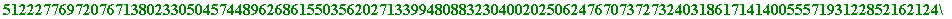
So, A and B have public and private keys , and we are now in business .
Let B send the following message, in signed form to A:
If we give you £1,000,000 will we
get the government contract?
For technical mathematical reasons - that can only be understood by someone who has really studied the mathematics of all of this - one must KEEP IN MIND that since A's public modulus is LESS than B's ( na is less than nb ), then one must use the SMALLER modulus FIRST [this just really means that the order in which the paints are applied is important]:
The steps are:
> B_num := to_number(`If we give you £1,000,000 will we get the government contract?`);
> length(B_num);
Because B_num is less than na , then the message can be sent as a single block (had that not been so, then one would have had to break up the numerical form of the message into blocks of digits, each having numerical value less than na )
B now does a double encryption :
FIRST using A's smaller modulus, with A's PUBLIC encryption power [so, laying on A's public paint],
SECOND using B's own modulus, with B's PRIVATE decryption power [laying on B's own private paint]:
> B_first := B_num&^ea mod na; # SMALLER modulus FIRST

> B_second := B_first&^db mod nb;
B_second is what A receives, and A now proceeds to do the double decryption as follows (simply reversing the last two steps):
FIRST using B's modulus, with B's PUBLIC encryption power [laying on B's public paint],
SECOND using A's own modulus, with A's PRIVATE decryption power [laying on A's own private paint]:
> A_first := B_second&^eb mod nb;
> A_second := A_first&^da mod na;
> from_number(A_second);
Now let A reply with the message :
You're joking! £2,000,000 and it's yours. You'll recoup all with contract.
Leave cash usual place.
> A_num := to_number(`You're joking! £2,000,000 and it's yours.You'll recoup all with contract. Leave cash usual place.`);
> length(A_num);
> length(na);
Again, because A_num is less than na , then the message can be sent as a single block .
> A_first := A_num&^da mod na; # SMALLER modulus first
> A_second := A_first&^eb mod nb;
>
A_second is what B receives, and B now proceeds to decrypt A's message as follows (simply reversing the last two steps):
> B_first := A_second&^db mod nb;
> B_second := B_first&^ea mod na;
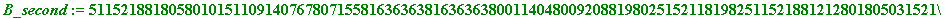
> from_number(B_second);
Section Three . The ' factorization problem .'
A critical observation . You may (indeed, should!) say :
"I see how one creates those public and private keys in RSA. One just does the following:
1. Choose two primes p and q , and form their product, n .
2. Choose an 'encryprion power' e (subject to a certain, minor technical constraint).
3. Calculate a 'decryption power' d , in a very particular way .
4. Make ( n , e) public but keep d private .
Surely that ' d ' is not really private (in the sense of remaining unknown)?
Surely if you knew a person's public -key - their ( n , e ) pair - you could just perform a certain calculation, and compute the value of their
private-key - their d - and on intercepting any messages sent to them proceed to decrypt the message? " [end of quote]
I say to you, show me what you mean , and you might proceed as follows:
"I know that Maple (say) has a command that ' factors ' numbers, meaning that it can break any whole number down into its prime constituents. Here are some examples :
> ifactor(91);
which shows that 91 is the product of the primes 7 and 13
> ifactor(637);
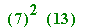
which shows that 637 is the product of the primes 7, 7 and 13.
And consider the following:
> ifactor(509429407491696281);
which means that 509429407491696281 is the product of the primes and , and so if someone announced their public ( n , e ) to be ( , ), then anyone could calculate that person's private d , and thus be able to decrypt that person's messages .
One would just do these calculations :
> p := 765432713;
> q := 665544337;
> e := 8779;
> igcdex(e, (p-1)*(q-1), x, y);

> d := x mod (p-1)*(q-1);
And that's all there is to it!! Given the value of n , one simply factors it, thus finding the values of the p and the q , and from that - using the value of
( p - 1)*( q - 1) - one calculates the value of the d , and that's it. Decrypt!!" [end of quote.]
I would completely agree with you , but would draw your attention now to the crucial point : all of that depended on your being able to recover the values of those two primes p and q from the value of n .
Major point .
Multiplying big numbers isn't a problem
BUT
factoring
big numbers is!! More precisely,
factoring certain BIG numbers is a problem
> 9999999999999999999999999999988888888888888888888888777777777777777777777777777777777777776666666666666666666666666665555555555555555555555555444444444444444444443333333333333333*2222222222222222222222111111111111111111111111111111000000000000000000000000055555555555555555555555555333333333333333333333333333333333;

> length(9999999999999999999999999999988888888888888888888888777777777777777777777777777777777777776666666666666666666666666665555555555555555555555555444444444444444444443333333333333333);
> length(2222222222222222222222111111111111111111111111111111000000000000000000000000055555555555555555555555555333333333333333333333333333333333);
There we saw that the product of one 178-digit number and a 136-digit number was calculated almost instantly.
Now let us look at a succession of multiplications, and corresponding factorizations:
> p1 := nextprime(38899887766);
> q1 := nextprime(64466887766);
> n1 := p1*q1; length(n1);
> ifactor(n1);
> p2 := nextprime(738899887766);
> q2 := nextprime(638899887766);
> n2 := p2*q2; length(n2);

> ifactor(n2);
> p3 := nextprime(5538899887766);

> q3 := nextprime(3138899887766);
> n3 := p3*q3; length(n3);
> ifactor(n3);
I could continue doing those sorts of calculations, each taking a little longer than the previuos one, but I am going to leap forward somewhat to
present you with this number - rather a famous one in the literature -
the 'RSA_129 ' number :
> RSA_129 := 114381625757888867669235779976146612010218296721242362562561842935706935245733897830597123563958705058989075147599290026879543541;
> length(RSA_129);
I am certainly NOT going to attempt to factor it!!
It first came to public attention in Martin Gardiner's much read column in the August 1997 issue of the Scientific American .
Rivest, Shamir and Adleman (of RSA fame) threw this number out as a challenge to be factored. Given the then state of mathematical knowledge (as far as factoring was concerned) and computer power, they estimated that it would take some 20,000 years to factor it, and thereby decrypt a message which they had encrypted using it as the ' n ' part of a public modulus.
Briefly, a method known as the 'Quadratic Sieve' - introduced in 1981 by the US mathematician Carl Pomerance - together with thousands of
computers worldwide (organised by the Dutch mathematician Arjen Lenstra) - factored it by April 1994, and decrypted the RSA-encrypted
message (which, incidentally, was: " The magic words are squeamish ossifrage. ")
Lenstra, and his co-workers found that RSA_129 was the product of the two prime numbers (I show them individually, then their produst, and then show their product really is RSA_129):
> f1 := 3490529510847650949147849619903898133417764638493387843990820577;
> length(f1);
> f2 := 32769132993266709549961988190834461413177642967992942539798288533;
> length(f2);
> f1*f2;
> RSA_129 - f1*f2;

If I were to foolishly enter the Maple command:
> # ifactor(RSA_129);
then the timer would stay on for MANY, MANY years ... .
Question . So, it it just a matter of mere size?
Answer . No. Size is only part of the problem:
I am going to create a number - which I will call by the name 'beyond_RSA_129' - which will have these properties:
it will be the product of two primes 'P' and 'Q'
I will choose P to be f2 (the greater of the two primes whose product is RSA_129)
I will choose Q to be greater than P
Those choices will automatically make 'beyond_RSA_129' be greater than RSA_129 (hence the name).
This is how I will do it:
> P := f2;
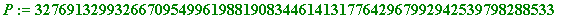
I am choosing 'Q' to be next prime after the prime 'P', and to save computation time in my lecture I do this:
> # Q := nextprime(P);
> Q := 32769132993266709549961988190834461413177642967992942539798288793;
> beyond_RSA_129 := P*Q;
> length(beyond_RSA_129);
But now I show you that that number can be QUICKLY factored as follows:
>
Fermat_factor:=proc(n,start,finish)
local k, s; readlib(issqr):
for k from start to finish do
if issqr(n+k^2) then s:=sqrt(n+k^2);
lprint(n,`factors as the product of`,
s-k,`and`,s+k); RETURN()
fi od end:
> Fermat_factor(beyond_RSA_129, 0, 300);
1073816077130400819475486272224340785666856801858501936519539003127821295385023569561686898933064223684576642307425535503474310669 factors as the product of 32769132993266709549961988190834461413177642967992942539798288533 and 32769132993266709549961988190834461413177642967992942539798288793
An almost instantaneous factorisation !!
How was that possible? It would not be possible to go into the exact details here in a public lecture, but suffice it to say that it involves little more than
elementary school work (IF I have time I may ... ).
What I will let out however is that the success was whooly dependant on the CRITICAL fact that the two primes P and Q - although large - are relatively close to each other :
> Q - P;
What - though - if one doesn't choose two primes that are relatively close to each other? Suppose one choose them so that they were quite far apart?
That's what I'm now going to do.
This time I will make up another number - I will call it 'way_beyond_RSA_129' - which will have these properties:
it will be the product of two primes 'P1' and 'Q1'
I will still choose P1 to be f2 (the greater of the two primes whose product is RSA_129)
I will choose Q1 to be MUCH greater than P1
This is how I will do it:
> P1 := f2;
To save computation time in my lecture I do this:
> # Q1 := nextprime(4470115461512684340891257138125051110076800700282905015819080092370422104067183317016903679999999999999630);
> Q1 := 4470115461512684340891257138125051110076800700282905015819080092370422104067183317016903680000000000000001;
> way_beyond_RSA_129 := P1*Q1;
> length(way_beyond_RSA_129);
> way_beyond_RSA_129 - beyond_RSA_129;
But that MUCH LARGER number can now be QUICKLY factored by doing this:
>
Pollard:=proc(n)
local a,k;
a[1]:=2:
for k from 2 while igcd(n,a[k-1]-1 mod n)=1
do a[k]:=a[k-1]&^k mod n od;
lprint(n,`is the PRODUCT of`, igcd(n, a[k-1]-1 mod n), `and`,
n/igcd(n, a[k-1]-1 mod n))
end:
> Pollard(way_beyond_RSA_129);
146481808053566948606112326494160580676597757390203425433760346556289969224977192583652803722778590707655656624536558761037114144280380743982554672552469432942539798288533 is the PRODUCT of 4470115461512684340891257138125051110076800700282905015819080092370422104067183317016903680000000000000001 and 32769132993266709549961988190834461413177642967992942539798288533
WONDERFUL!!!
The mathematical ideas behind the success of that factorisation are due to a British mathematician called John Pollard (he lives outside Reading), and were published by him in 1974 in the Mathematical Proceedings of the Cambridge Philosophical Society, in a now famous paper. The method he develops there has become known as 'Pollard's p - 1 method ', and with reason:
In that paper he expounds a very beautiful idea which enables one to factor a number, one of whose prime factors 'p' is such that the number p - 1 has only SMALL prime factors.
That is WHY I was able so quickly to factor the number 'way_beyond_RSA_129. Look at how its prime factor Q1 is structured :
> ifactor(Q1 - 1);
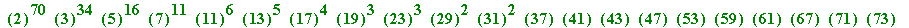
Look at all those SMALL primes: 2, 3, 5, ... , 71 and 73.
I'll let you in on my secret. No, I won't. It would spoil the fun (though some of you may see ... ).
Whereas look at the two prime factors - f1 and f2 - of the RSA_129 number; see how they behave:
> ifactor(f1 - 1);
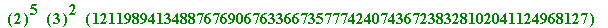
> ifactor(f2 - 1);
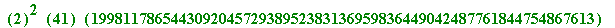
>
Rivest, Shamir and Adleman knew what they were doing in choosing their two primes to make up their 129 digit number.
An attempt at a summary
. The current security of the RSA method rests on the
general difficulty of factorisation
... .
Besides the Pollard p-1 method there is also his
rho-
method aka his
Monte Carlo
method), and there is the Pomerance
quadratic sieve
method, Hendrik Lenstra's
elliptic curve
method, and the current dominant method - the
Number Field Sieve
method (introduced by Pollard, and added to by many others)
I hope there is enough here for someone who has not been at my public talk to be able to follow this.
Details concerning the Fermat factorisation method, and the Pollard 'p-1' method, may be seen in Maple
worksheets of mine which are available off the Web at the US Naval Academy on David Joyner's:
http://web.usna.navy.mil/~wdj/crypto.htm
When my College has its own Web site [added October 1999: it now does] I will make many more such Maple documents available.
Finally, all of the above, and much, much more besides, is studied by my 3rd. year B.Ed. and B.A. students in their
Number Theory and Cryptography
course here in St. Patrick's College.
______________________